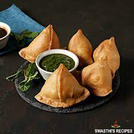

dosa is a delicious food
we prefer the most delicious breakfast!
the samosa is a tasty snacks and and also all people like it to taste the samosa.. its most popular snack for all.. with tea it looks a perfect snack! If we go by the reports and facts, samosa originated during the 10th century in the Middle East region. The first official mention of samosa was found in Iranian historian Abolfazl Beyhaqi's work Tarikh-e Beyhaghi, where it was referred to as 'Sambosa'